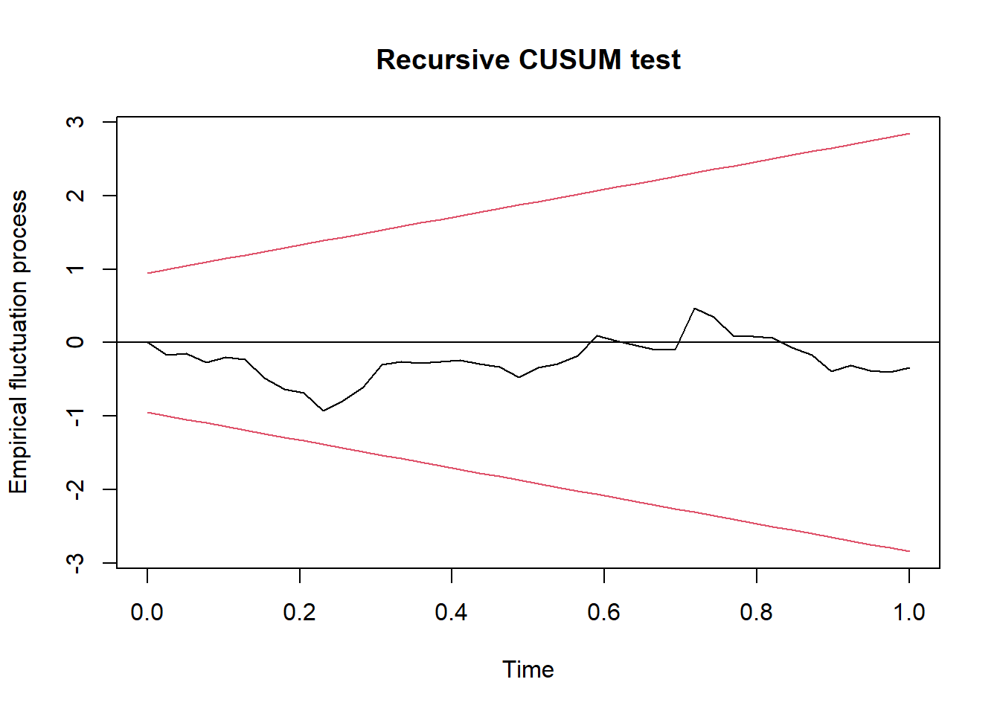

library(readxl)
data1 <- read_excel("Data/Bab 4/VECM.xlsx")
tsdata = data1[,c(-1,-2,-3,-4)]
tsdata = ts(tsdata, start=c(2010,1), frequency=12)
plot(tsdata)4 Multivariate Time Series
4.1 VAR/VECM
# Stationary Test
library(aTSA)
Attaching package: 'aTSA'The following object is masked from 'package:graphics':
identifyadf.test(tsdata[,"LnIHK"])Augmented Dickey-Fuller Test
alternative: stationary
Type 1: no drift no trend
lag ADF p.value
[1,] 0 3.25 0.99
[2,] 1 7.29 0.99
[3,] 2 3.75 0.99
[4,] 3 5.84 0.99
Type 2: with drift no trend
lag ADF p.value
[1,] 0 -0.506 0.869
[2,] 1 -0.541 0.856
[3,] 2 -0.727 0.791
[4,] 3 -0.914 0.725
Type 3: with drift and trend
lag ADF p.value
[1,] 0 -5.31 0.0100
[2,] 1 -2.02 0.5601
[3,] 2 -3.33 0.0732
[4,] 3 -1.77 0.6648
----
Note: in fact, p.value = 0.01 means p.value <= 0.01 adf.test(tsdata[,"LnRM2"])Augmented Dickey-Fuller Test
alternative: stationary
Type 1: no drift no trend
lag ADF p.value
[1,] 0 3.09 0.99
[2,] 1 4.89 0.99
[3,] 2 4.21 0.99
[4,] 3 4.52 0.99
Type 2: with drift no trend
lag ADF p.value
[1,] 0 -1.53 0.509
[2,] 1 -2.12 0.284
[3,] 2 -2.04 0.315
[4,] 3 -2.39 0.177
Type 3: with drift and trend
lag ADF p.value
[1,] 0 -2.31 0.441
[2,] 1 -1.50 0.776
[3,] 2 -1.36 0.836
[4,] 3 -1.09 0.918
----
Note: in fact, p.value = 0.01 means p.value <= 0.01 adf.test(tsdata[,"LnIPI"])Augmented Dickey-Fuller Test
alternative: stationary
Type 1: no drift no trend
lag ADF p.value
[1,] 0 1.03 0.916
[2,] 1 1.45 0.961
[3,] 2 1.81 0.981
[4,] 3 2.09 0.990
Type 2: with drift no trend
lag ADF p.value
[1,] 0 -1.588 0.487
[2,] 1 -1.069 0.671
[3,] 2 -0.493 0.873
[4,] 3 -0.218 0.927
Type 3: with drift and trend
lag ADF p.value
[1,] 0 -6.68 0.01
[2,] 1 -5.35 0.01
[3,] 2 -4.47 0.01
[4,] 3 -4.11 0.01
----
Note: in fact, p.value = 0.01 means p.value <= 0.01 adf.test(diff(tsdata[,"LnIHK"]))Augmented Dickey-Fuller Test
alternative: stationary
Type 1: no drift no trend
lag ADF p.value
[1,] 0 -15.36 0.01
[2,] 1 -3.52 0.01
[3,] 2 -4.20 0.01
[4,] 3 -2.61 0.01
Type 2: with drift no trend
lag ADF p.value
[1,] 0 -21.22 0.01
[2,] 1 -5.37 0.01
[3,] 2 -7.78 0.01
[4,] 3 -5.55 0.01
Type 3: with drift and trend
lag ADF p.value
[1,] 0 -21.09 0.01
[2,] 1 -5.36 0.01
[3,] 2 -7.79 0.01
[4,] 3 -5.59 0.01
----
Note: in fact, p.value = 0.01 means p.value <= 0.01 adf.test(diff(tsdata[,"LnRM2"]))Augmented Dickey-Fuller Test
alternative: stationary
Type 1: no drift no trend
lag ADF p.value
[1,] 0 -11.73 0.01
[2,] 1 -5.61 0.01
[3,] 2 -4.49 0.01
[4,] 3 -3.31 0.01
Type 2: with drift no trend
lag ADF p.value
[1,] 0 -14.27 0.01
[2,] 1 -7.53 0.01
[3,] 2 -6.83 0.01
[4,] 3 -5.62 0.01
Type 3: with drift and trend
lag ADF p.value
[1,] 0 -14.60 0.01
[2,] 1 -7.85 0.01
[3,] 2 -7.34 0.01
[4,] 3 -6.33 0.01
----
Note: in fact, p.value = 0.01 means p.value <= 0.01 adf.test(diff(tsdata[,"LnIPI"]))Augmented Dickey-Fuller Test
alternative: stationary
Type 1: no drift no trend
lag ADF p.value
[1,] 0 -12.46 0.01
[2,] 1 -9.27 0.01
[3,] 2 -7.24 0.01
[4,] 3 -5.75 0.01
Type 2: with drift no trend
lag ADF p.value
[1,] 0 -12.64 0.01
[2,] 1 -9.59 0.01
[3,] 2 -7.70 0.01
[4,] 3 -6.32 0.01
Type 3: with drift and trend
lag ADF p.value
[1,] 0 -12.56 0.01
[2,] 1 -9.54 0.01
[3,] 2 -7.67 0.01
[4,] 3 -6.31 0.01
----
Note: in fact, p.value = 0.01 means p.value <= 0.01 library(urca)
library(vars)Loading required package: MASSLoading required package: strucchangeLoading required package: zoo
Attaching package: 'zoo'The following objects are masked from 'package:base':
as.Date, as.Date.numericLoading required package: sandwichLoading required package: lmtest
Attaching package: 'vars'The following object is masked from 'package:aTSA':
arch.test# Lag Optimum
VARselect(tsdata, lag.max = 10)$selection
AIC(n) HQ(n) SC(n) FPE(n)
9 2 2 9
$criteria
1 2 3 4 5
AIC(n) -2.454158e+01 -2.517704e+01 -2.527724e+01 -2.529876e+01 -2.531948e+01
HQ(n) -2.438847e+01 -2.490910e+01 -2.489447e+01 -2.480116e+01 -2.470705e+01
SC(n) -2.415612e+01 -2.450249e+01 -2.431360e+01 -2.404603e+01 -2.377765e+01
FPE(n) 2.197302e-11 1.165805e-11 1.058765e-11 1.043683e-11 1.034191e-11
6 7 8 9 10
AIC(n) -2.531117e+01 -2.509185e+01 -2.516992e+01 -2.557138e+01 -2.549790e+01
HQ(n) -2.458391e+01 -2.424976e+01 -2.421299e+01 -2.449963e+01 -2.431131e+01
SC(n) -2.348025e+01 -2.297184e+01 -2.276081e+01 -2.287319e+01 -2.251061e+01
FPE(n) 1.060910e-11 1.353419e-11 1.293440e-11 9.038835e-12 1.028471e-11# Cointegration Test
cointest_eigen = ca.jo(tsdata, K=2, type="eigen", ecdet="const", spec="longrun")
summary(cointest_eigen)
######################
# Johansen-Procedure #
######################
Test type: maximal eigenvalue statistic (lambda max) , without linear trend and constant in cointegration
Eigenvalues (lambda):
[1] 5.404113e-01 2.481996e-01 6.245216e-02 -2.633450e-15
Values of teststatistic and critical values of test:
test 10pct 5pct 1pct
r <= 2 | 5.03 7.52 9.24 12.97
r <= 1 | 22.25 13.75 15.67 20.20
r = 0 | 60.64 19.77 22.00 26.81
Eigenvectors, normalised to first column:
(These are the cointegration relations)
LnIHK.l2 LnRM2.l2 LnIPI.l2 constant
LnIHK.l2 1.0000000 1.00000000 1.0000000 1.0000000
LnRM2.l2 -0.1153114 0.08719842 -1.0510635 -0.6085127
LnIPI.l2 -0.8107822 -1.31468643 0.2406645 0.1913803
constant 0.4060887 0.96758544 4.8089173 0.5277719
Weights W:
(This is the loading matrix)
LnIHK.l2 LnRM2.l2 LnIPI.l2 constant
LnIHK.d -0.07391103 -0.02494780 -0.03114995 -2.277816e-13
LnRM2.d -0.06399547 0.08952368 0.07223974 4.294637e-13
LnIPI.d -0.01046286 0.46857303 -0.03192575 8.303978e-13# VECM
modelvecm = cajorls(cointest_eigen)summary(modelvecm$rlm)Response LnIHK.d :
Call:
lm(formula = LnIHK.d ~ ect1 + LnIHK.dl1 + LnRM2.dl1 + LnIPI.dl1 -
1, data = data.mat)
Residuals:
Min 1Q Median 3Q Max
-0.015021 -0.005668 -0.001157 0.003871 0.027827
Coefficients:
Estimate Std. Error t value Pr(>|t|)
ect1 -0.07391 0.01199 -6.166 3.37e-08 ***
LnIHK.dl1 -0.70491 0.10168 -6.933 1.31e-09 ***
LnRM2.dl1 0.08470 0.06861 1.234 0.221
LnIPI.dl1 -0.01593 0.02695 -0.591 0.556
---
Signif. codes: 0 '***' 0.001 '**' 0.01 '*' 0.05 '.' 0.1 ' ' 1
Residual standard error: 0.008005 on 74 degrees of freedom
Multiple R-squared: 0.6302, Adjusted R-squared: 0.6102
F-statistic: 31.53 on 4 and 74 DF, p-value: 2.518e-15
Response LnRM2.d :
Call:
lm(formula = LnRM2.d ~ ect1 + LnIHK.dl1 + LnRM2.dl1 + LnIPI.dl1 -
1, data = data.mat)
Residuals:
Min 1Q Median 3Q Max
-0.030921 -0.011339 0.001549 0.010970 0.044395
Coefficients:
Estimate Std. Error t value Pr(>|t|)
ect1 -0.06400 0.02313 -2.767 0.00715 **
LnIHK.dl1 0.33519 0.19621 1.708 0.09177 .
LnRM2.dl1 -0.30552 0.13241 -2.307 0.02383 *
LnIPI.dl1 0.02765 0.05200 0.532 0.59650
---
Signif. codes: 0 '***' 0.001 '**' 0.01 '*' 0.05 '.' 0.1 ' ' 1
Residual standard error: 0.01545 on 74 degrees of freedom
Multiple R-squared: 0.3241, Adjusted R-squared: 0.2875
F-statistic: 8.87 on 4 and 74 DF, p-value: 6.604e-06
Response LnIPI.d :
Call:
lm(formula = LnIPI.d ~ ect1 + LnIHK.dl1 + LnRM2.dl1 + LnIPI.dl1 -
1, data = data.mat)
Residuals:
Min 1Q Median 3Q Max
-0.094660 -0.011913 0.000434 0.021986 0.101991
Coefficients:
Estimate Std. Error t value Pr(>|t|)
ect1 -0.01046 0.05068 -0.206 0.83700
LnIHK.dl1 -0.08499 0.42988 -0.198 0.84383
LnRM2.dl1 0.21190 0.29009 0.730 0.46742
LnIPI.dl1 -0.35319 0.11394 -3.100 0.00274 **
---
Signif. codes: 0 '***' 0.001 '**' 0.01 '*' 0.05 '.' 0.1 ' ' 1
Residual standard error: 0.03385 on 74 degrees of freedom
Multiple R-squared: 0.1312, Adjusted R-squared: 0.08427
F-statistic: 2.794 on 4 and 74 DF, p-value: 0.03214modelvecm$beta ect1
LnIHK.l2 1.0000000
LnRM2.l2 -0.1153114
LnIPI.l2 -0.8107822
constant 0.4060887vecm = vec2var(cointest_eigen)# IRF
ir = irf(vecm, n.ahead=48)
plot(ir)# FEVD
vd = fevd(vecm, n.ahead=48)vd_LnIHK = as.matrix(vd$LnIHK)
barplot(t(vd_LnIHK), beside=FALSE, main="FEVD LnIHK", xlab="periode", col=c("blue","red","green"), legend.text=TRUE) 
vd_LnRM2 = as.matrix(vd$LnRM2)
barplot(t(vd_LnRM2), beside=FALSE, main="FEVD LnRM2", xlab="periode", col=c("blue","red","green"), legend.text=TRUE)vd_LnIPI = as.matrix(vd$LnIPI)
barplot(t(vd_LnIPI), beside=FALSE, main="FEVD LnIPI", xlab="periode", col=c("blue","red","green"), legend.text=TRUE)
# VAR FD, If No cointegtration
D1LnIHK = diff(tsdata[,"LnIHK"])
D1LnRM2 = diff(tsdata[,"LnRM2"])
D1LnIPI = diff(tsdata[,"LnIPI"])
datadiff = cbind(D1LnIHK, D1LnRM2, D1LnIPI)
plot(datadiff)VARselect(datadiff, lag.max = 10)$selection
AIC(n) HQ(n) SC(n) FPE(n)
10 3 1 3
$criteria
1 2 3 4 5
AIC(n) -2.488624e+01 -2.508974e+01 -2.522710e+01 -2.513616e+01 -2.494060e+01
HQ(n) -2.473209e+01 -2.481999e+01 -2.484173e+01 -2.463518e+01 -2.432401e+01
SC(n) -2.449770e+01 -2.440980e+01 -2.425574e+01 -2.387340e+01 -2.338644e+01
FPE(n) 1.556733e-11 1.272259e-11 1.113498e-11 1.228686e-11 1.512269e-11
6 7 8 9 10
AIC(n) -2.490228e+01 -2.492141e+01 -2.513204e+01 -2.515552e+01 -2.527308e+01
HQ(n) -2.417008e+01 -2.407360e+01 -2.416862e+01 -2.407649e+01 -2.407844e+01
SC(n) -2.305671e+01 -2.278444e+01 -2.270366e+01 -2.243574e+01 -2.226189e+01
FPE(n) 1.599877e-11 1.609812e-11 1.349591e-11 1.379267e-11 1.300117e-11varfd = VAR(datadiff, p=3, type="both")
summary(varfd)
VAR Estimation Results:
=========================
Endogenous variables: D1LnIHK, D1LnRM2, D1LnIPI
Deterministic variables: both
Sample size: 76
Log Likelihood: 669.253
Roots of the characteristic polynomial:
0.9777 0.7641 0.7641 0.6842 0.6842 0.6017 0.6017 0.5599 0.1487
Call:
VAR(y = datadiff, p = 3, type = "both")
Estimation results for equation D1LnIHK:
========================================
D1LnIHK = D1LnIHK.l1 + D1LnRM2.l1 + D1LnIPI.l1 + D1LnIHK.l2 + D1LnRM2.l2 + D1LnIPI.l2 + D1LnIHK.l3 + D1LnRM2.l3 + D1LnIPI.l3 + const + trend
Estimate Std. Error t value Pr(>|t|)
D1LnIHK.l1 -2.695e-01 1.136e-01 -2.372 0.02065 *
D1LnRM2.l1 1.048e-01 6.640e-02 1.578 0.11951
D1LnIPI.l1 -2.316e-02 2.636e-02 -0.879 0.38286
D1LnIHK.l2 2.542e-01 1.214e-01 2.095 0.04010 *
D1LnRM2.l2 1.258e-01 6.760e-02 1.861 0.06733 .
D1LnIPI.l2 7.308e-03 2.795e-02 0.261 0.79454
D1LnIHK.l3 -3.575e-01 1.219e-01 -2.933 0.00463 **
D1LnRM2.l3 1.015e-01 6.679e-02 1.520 0.13348
D1LnIPI.l3 3.637e-02 2.675e-02 1.360 0.17860
const 3.701e-03 2.760e-03 1.341 0.18469
trend 3.603e-06 3.837e-05 0.094 0.92549
---
Signif. codes: 0 '***' 0.001 '**' 0.01 '*' 0.05 '.' 0.1 ' ' 1
Residual standard error: 0.006803 on 65 degrees of freedom
Multiple R-Squared: 0.7325, Adjusted R-squared: 0.6913
F-statistic: 17.79 on 10 and 65 DF, p-value: 4.614e-15
Estimation results for equation D1LnRM2:
========================================
D1LnRM2 = D1LnIHK.l1 + D1LnRM2.l1 + D1LnIPI.l1 + D1LnIHK.l2 + D1LnRM2.l2 + D1LnIPI.l2 + D1LnIHK.l3 + D1LnRM2.l3 + D1LnIPI.l3 + const + trend
Estimate Std. Error t value Pr(>|t|)
D1LnIHK.l1 -1.023e-01 2.305e-01 -0.444 0.658605
D1LnRM2.l1 -4.005e-01 1.347e-01 -2.973 0.004138 **
D1LnIPI.l1 -4.924e-03 5.348e-02 -0.092 0.926915
D1LnIHK.l2 -7.711e-01 2.463e-01 -3.131 0.002611 **
D1LnRM2.l2 -3.981e-01 1.372e-01 -2.902 0.005054 **
D1LnIPI.l2 4.497e-02 5.671e-02 0.793 0.430615
D1LnIHK.l3 2.169e-01 2.473e-01 0.877 0.383719
D1LnRM2.l3 -1.699e-02 1.355e-01 -0.125 0.900617
D1LnIPI.l3 -4.905e-02 5.427e-02 -0.904 0.369493
const 2.144e-02 5.601e-03 3.829 0.000292 ***
trend -1.726e-04 7.786e-05 -2.217 0.030141 *
---
Signif. codes: 0 '***' 0.001 '**' 0.01 '*' 0.05 '.' 0.1 ' ' 1
Residual standard error: 0.0138 on 65 degrees of freedom
Multiple R-Squared: 0.4561, Adjusted R-squared: 0.3724
F-statistic: 5.45 on 10 and 65 DF, p-value: 7.948e-06
Estimation results for equation D1LnIPI:
========================================
D1LnIPI = D1LnIHK.l1 + D1LnRM2.l1 + D1LnIPI.l1 + D1LnIHK.l2 + D1LnRM2.l2 + D1LnIPI.l2 + D1LnIHK.l3 + D1LnRM2.l3 + D1LnIPI.l3 + const + trend
Estimate Std. Error t value Pr(>|t|)
D1LnIHK.l1 -9.657e-01 5.265e-01 -1.834 0.07121 .
D1LnRM2.l1 -4.073e-02 3.078e-01 -0.132 0.89511
D1LnIPI.l1 -5.834e-01 1.221e-01 -4.776 1.06e-05 ***
D1LnIHK.l2 -1.065e+00 5.625e-01 -1.893 0.06284 .
D1LnRM2.l2 -2.528e-01 3.133e-01 -0.807 0.42264
D1LnIPI.l2 -4.311e-01 1.295e-01 -3.328 0.00144 **
D1LnIHK.l3 -3.630e-01 5.648e-01 -0.643 0.52271
D1LnRM2.l3 -3.290e-01 3.096e-01 -1.063 0.29188
D1LnIPI.l3 -2.070e-01 1.240e-01 -1.670 0.09981 .
const 2.268e-02 1.279e-02 1.773 0.08089 .
trend 4.216e-06 1.778e-04 0.024 0.98116
---
Signif. codes: 0 '***' 0.001 '**' 0.01 '*' 0.05 '.' 0.1 ' ' 1
Residual standard error: 0.03153 on 65 degrees of freedom
Multiple R-Squared: 0.3186, Adjusted R-squared: 0.2138
F-statistic: 3.039 on 10 and 65 DF, p-value: 0.003239
Covariance matrix of residuals:
D1LnIHK D1LnRM2 D1LnIPI
D1LnIHK 4.628e-05 -3.554e-05 -1.799e-06
D1LnRM2 -3.554e-05 1.906e-04 8.303e-05
D1LnIPI -1.799e-06 8.303e-05 9.941e-04
Correlation matrix of residuals:
D1LnIHK D1LnRM2 D1LnIPI
D1LnIHK 1.000000 -0.3785 -0.008387
D1LnRM2 -0.378457 1.0000 0.190775
D1LnIPI -0.008387 0.1908 1.000000# Stablity VAR
# plot(stability(varfd))# IRF
impres = irf(varfd, n.ahead=48)
plot(impres)4.2 SVAR
library(readxl)
data1 <- read_excel("Data/Bab 4/SVAR.xlsx")
head(data1)# A tibble: 6 × 4
quarter growth inflation interest
<chr> <dbl> <dbl> <dbl>
1 2006q1 5.13 15.0 12.6
2 2006q2 4.93 14.8 12.8
3 2006q3 5.86 14.0 12.4
4 2006q4 6.06 6.41 11.2
5 2007q1 6.06 6.34 9.83
6 2007q2 6.73 5.64 9.08tsdata = data1[,c(-1)]
tsdata = ts(tsdata, start=c(2006,1), frequency=4)
plot(tsdata)library(aTSA)
adf.test(tsdata[,"growth"])Augmented Dickey-Fuller Test
alternative: stationary
Type 1: no drift no trend
lag ADF p.value
[1,] 0 -0.315 0.550
[2,] 1 -0.265 0.564
[3,] 2 -0.578 0.469
[4,] 3 -0.583 0.467
Type 2: with drift no trend
lag ADF p.value
[1,] 0 -2.34 0.1978
[2,] 1 -2.68 0.0874
[3,] 2 -2.63 0.0955
[4,] 3 -2.25 0.2320
Type 3: with drift and trend
lag ADF p.value
[1,] 0 -3.06 0.1453
[2,] 1 -3.74 0.0296
[3,] 2 -3.40 0.0647
[4,] 3 -3.02 0.1627
----
Note: in fact, p.value = 0.01 means p.value <= 0.01 adf.test(tsdata[,"inflation"])Augmented Dickey-Fuller Test
alternative: stationary
Type 1: no drift no trend
lag ADF p.value
[1,] 0 -2.34 0.0212
[2,] 1 -2.37 0.0200
[3,] 2 -2.31 0.0227
[4,] 3 -1.14 0.2675
Type 2: with drift no trend
lag ADF p.value
[1,] 0 -3.26 0.0236
[2,] 1 -3.82 0.0100
[3,] 2 -4.50 0.0100
[4,] 3 -2.37 0.1887
Type 3: with drift and trend
lag ADF p.value
[1,] 0 -3.46 0.0552
[2,] 1 -4.32 0.0100
[3,] 2 -5.67 0.0100
[4,] 3 -3.86 0.0221
----
Note: in fact, p.value = 0.01 means p.value <= 0.01 adf.test(tsdata[,"interest"])Augmented Dickey-Fuller Test
alternative: stationary
Type 1: no drift no trend
lag ADF p.value
[1,] 0 -2.72 0.0100
[2,] 1 -2.02 0.0441
[3,] 2 -1.93 0.0532
[4,] 3 -1.67 0.0913
Type 2: with drift no trend
lag ADF p.value
[1,] 0 -3.06 0.0391
[2,] 1 -3.52 0.0126
[3,] 2 -3.33 0.0206
[4,] 3 -2.54 0.1232
Type 3: with drift and trend
lag ADF p.value
[1,] 0 -2.49 0.3714
[2,] 1 -4.07 0.0133
[3,] 2 -3.82 0.0240
[4,] 3 -2.90 0.2080
----
Note: in fact, p.value = 0.01 means p.value <= 0.01 #cLag Optimum
library(vars)
VARselect(tsdata, lag.max = 10)$selection
AIC(n) HQ(n) SC(n) FPE(n)
2 1 1 2
$criteria
1 2 3 4 5 6
AIC(n) -3.70894477 -3.80592549 -3.69612636 -3.74782971 -3.74823364 -3.50174099
HQ(n) -3.53024390 -3.49319896 -3.24937417 -3.16705186 -3.03343013 -2.65291182
SC(n) -3.23190789 -2.97111094 -2.50353415 -2.19745983 -1.84008610 -1.23581578
FPE(n) 0.02453576 0.02239812 0.02535002 0.02471383 0.02580004 0.03528312
7 8 9 10
AIC(n) -3.37833948 -3.26151640 -3.71876734 -3.74360021
HQ(n) -2.39548466 -2.14463592 -2.46786120 -2.35866842
SC(n) -0.75463661 -0.28003587 -0.37950914 -0.04656435
FPE(n) 0.04400099 0.05681734 0.04372386 0.05614527# VAR Estimation
var.est1 = VAR(tsdata, p = 2, type = "none")
summary(var.est1)
VAR Estimation Results:
=========================
Endogenous variables: growth, inflation, interest
Deterministic variables: none
Sample size: 54
Log Likelihood: -128.363
Roots of the characteristic polynomial:
0.9909 0.706 0.706 0.4297 0.1321 0.1321
Call:
VAR(y = tsdata, p = 2, type = "none")
Estimation results for equation growth:
=======================================
growth = growth.l1 + inflation.l1 + interest.l1 + growth.l2 + inflation.l2 + interest.l2
Estimate Std. Error t value Pr(>|t|)
growth.l1 0.833907 0.134741 6.189 1.29e-07 ***
inflation.l1 0.001106 0.033450 0.033 0.9738
interest.l1 0.044345 0.143583 0.309 0.7588
growth.l2 0.035982 0.128753 0.279 0.7811
inflation.l2 -0.095836 0.038141 -2.513 0.0154 *
interest.l2 0.133608 0.114623 1.166 0.2495
---
Signif. codes: 0 '***' 0.001 '**' 0.01 '*' 0.05 '.' 0.1 ' ' 1
Residual standard error: 0.3558 on 48 degrees of freedom
Multiple R-Squared: 0.9963, Adjusted R-squared: 0.9959
F-statistic: 2164 on 6 and 48 DF, p-value: < 2.2e-16
Estimation results for equation inflation:
==========================================
inflation = growth.l1 + inflation.l1 + interest.l1 + growth.l2 + inflation.l2 + interest.l2
Estimate Std. Error t value Pr(>|t|)
growth.l1 0.232652 0.602805 0.386 0.701
inflation.l1 0.840256 0.149650 5.615 9.66e-07 ***
interest.l1 -0.061073 0.642360 -0.095 0.925
growth.l2 0.115551 0.576015 0.201 0.842
inflation.l2 -0.135143 0.170636 -0.792 0.432
interest.l2 0.002248 0.512801 0.004 0.997
---
Signif. codes: 0 '***' 0.001 '**' 0.01 '*' 0.05 '.' 0.1 ' ' 1
Residual standard error: 1.592 on 48 degrees of freedom
Multiple R-Squared: 0.9381, Adjusted R-squared: 0.9304
F-statistic: 121.3 on 6 and 48 DF, p-value: < 2.2e-16
Estimation results for equation interest:
=========================================
interest = growth.l1 + inflation.l1 + interest.l1 + growth.l2 + inflation.l2 + interest.l2
Estimate Std. Error t value Pr(>|t|)
growth.l1 0.20986 0.13119 1.600 0.11622
inflation.l1 0.11010 0.03257 3.381 0.00144 **
interest.l1 1.12480 0.13979 8.046 1.88e-10 ***
growth.l2 -0.06797 0.12536 -0.542 0.59017
inflation.l2 -0.03737 0.03713 -1.006 0.31930
interest.l2 -0.30853 0.11160 -2.765 0.00806 **
---
Signif. codes: 0 '***' 0.001 '**' 0.01 '*' 0.05 '.' 0.1 ' ' 1
Residual standard error: 0.3464 on 48 degrees of freedom
Multiple R-Squared: 0.9979, Adjusted R-squared: 0.9976
F-statistic: 3734 on 6 and 48 DF, p-value: < 2.2e-16
Covariance matrix of residuals:
growth inflation interest
growth 0.12655 0.08828 0.01781
inflation 0.08828 2.53321 0.18157
interest 0.01781 0.18157 0.11999
Correlation matrix of residuals:
growth inflation interest
growth 1.0000 0.1559 0.1445
inflation 0.1559 1.0000 0.3293
interest 0.1445 0.3293 1.0000# Matriks A for SVAR AB-model
a.mat = diag(3)
diag(a.mat) = NA
a.mat[2,1] = NA
a.mat[3,1] = NA
a.mat[3,2] = NA
a.mat [,1] [,2] [,3]
[1,] NA 0 0
[2,] NA NA 0
[3,] NA NA NA# Matriks B for SVAR AB-model
b.mat = diag(3)
diag(b.mat) = NA
b.mat [,1] [,2] [,3]
[1,] NA 0 0
[2,] 0 NA 0
[3,] 0 0 NA# Est SVAR
svar1 = SVAR(var.est1, Amat = a.mat, Bmat = b.mat, max.iter = 10000, hessian = TRUE)Warning in SVAR(var.est1, Amat = a.mat, Bmat = b.mat, max.iter = 10000, : The
AB-model is just identified. No test possible.svar1
SVAR Estimation Results:
========================
Estimated A matrix:
growth inflation interest
growth 1.00000 0.00000 0
inflation -0.69543 1.00000 0
interest -0.09344 -0.06834 1
Estimated B matrix:
growth inflation interest
growth 0.3558 0.000 0.0000
inflation 0.0000 1.573 0.0000
interest 0.0000 0.000 0.3255# IRF
inf.int = irf(svar1, response = "interest", impulse = "inflation", n.ahead = 40)
plot(inf.int)inf.gdp = irf(svar1, response = "growth", impulse = "inflation", n.ahead = 40)
plot(inf.gdp)inf.inf = irf(svar1, response = "inflation", impulse = "inflation", n.ahead = 40)
plot(inf.inf)
gdp.inf = irf(svar1, response = "inflation", impulse = "growth", n.ahead = 40)
plot(gdp.inf)#FEVD
vd = fevd(svar1, n.ahead=40)4.3 ARDL
library(ARDL)Warning: package 'ARDL' was built under R version 4.4.3To cite the ARDL package in publications:
Use this reference to refer to the validity of the ARDL package.
Natsiopoulos, Kleanthis, and Tzeremes, Nickolaos G. (2022). ARDL
bounds test for cointegration: Replicating the Pesaran et al. (2001)
results for the UK earnings equation using R. Journal of Applied
Econometrics, 37(5), 1079-1090. https://doi.org/10.1002/jae.2919
Use this reference to cite this specific version of the ARDL package.
Kleanthis Natsiopoulos and Nickolaos Tzeremes (2023). ARDL: ARDL, ECM
and Bounds-Test for Cointegration. R package version 0.2.4.
https://CRAN.R-project.org/package=ARDL# data sample
data(denmark)
denmark <- data.frame(denmark)
attach(denmark)
str(denmark)'data.frame': 55 obs. of 5 variables:
$ LRM: num 11.6 11.6 11.6 11.6 11.6 ...
$ LRY: num 5.9 5.87 5.84 5.81 5.8 ...
$ LPY: num -0.619 -0.581 -0.543 -0.505 -0.486 ...
$ IBO: num 0.155 0.178 0.171 0.152 0.134 ...
$ IDE: num 0.094 0.0955 0.0955 0.0955 0.0885 0.079 0.076 0.074 0.072 0.078 ...denmark = ts(denmark, start=c(1974,1), frequency=12)
plot(denmark)library(tseries)Registered S3 method overwritten by 'quantmod':
method from
as.zoo.data.frame zoo
Attaching package: 'tseries'The following objects are masked from 'package:aTSA':
adf.test, kpss.test, pp.testpp.test(LRM) #Non-Stationary
Phillips-Perron Unit Root Test
data: LRM
Dickey-Fuller Z(alpha) = -3.2568, Truncation lag parameter = 3, p-value
= 0.9205
alternative hypothesis: stationarypp.test(LRY) #Non-Stationary
Phillips-Perron Unit Root Test
data: LRY
Dickey-Fuller Z(alpha) = -11.467, Truncation lag parameter = 3, p-value
= 0.428
alternative hypothesis: stationarypp.test(IBO) #Non-Stationary
Phillips-Perron Unit Root Test
data: IBO
Dickey-Fuller Z(alpha) = -5.5494, Truncation lag parameter = 3, p-value
= 0.7882
alternative hypothesis: stationarypp.test(IDE) #Non-Stationary
Phillips-Perron Unit Root Test
data: IDE
Dickey-Fuller Z(alpha) = -9.0346, Truncation lag parameter = 3, p-value
= 0.5761
alternative hypothesis: stationarypp.test(diff(LRM)) #StationaryWarning in pp.test(diff(LRM)): p-value smaller than printed p-value
Phillips-Perron Unit Root Test
data: diff(LRM)
Dickey-Fuller Z(alpha) = -59.819, Truncation lag parameter = 3, p-value
= 0.01
alternative hypothesis: stationarypp.test(diff(LRY)) #StationaryWarning in pp.test(diff(LRY)): p-value smaller than printed p-value
Phillips-Perron Unit Root Test
data: diff(LRY)
Dickey-Fuller Z(alpha) = -42.472, Truncation lag parameter = 3, p-value
= 0.01
alternative hypothesis: stationarypp.test(diff(IBO)) #StationaryWarning in pp.test(diff(IBO)): p-value smaller than printed p-value
Phillips-Perron Unit Root Test
data: diff(IBO)
Dickey-Fuller Z(alpha) = -38.898, Truncation lag parameter = 3, p-value
= 0.01
alternative hypothesis: stationarypp.test(diff(IDE)) #StationaryWarning in pp.test(diff(IDE)): p-value smaller than printed p-value
Phillips-Perron Unit Root Test
data: diff(IDE)
Dickey-Fuller Z(alpha) = -35.668, Truncation lag parameter = 3, p-value
= 0.01
alternative hypothesis: stationary# ARDL Auto Search Optimum Lag
models <- auto_ardl(LRM ~ LRY + IBO + IDE, data = denmark, max_order = 5)
# The top 20 models according to the AIC
models$top_orders LRM LRY IBO IDE AIC
1 3 1 3 2 -251.0259
2 3 1 3 3 -250.1144
3 2 2 0 0 -249.6266
4 3 2 3 2 -249.1087
5 3 2 3 3 -248.1858
6 2 2 0 1 -247.7786
7 2 1 0 0 -247.5643
8 2 2 1 1 -246.6885
9 3 3 3 3 -246.3061
10 2 2 1 2 -246.2709
11 2 1 1 1 -245.8736
12 2 2 2 2 -245.7722
13 1 1 0 0 -245.6620
14 2 1 2 2 -245.1712
15 3 1 2 2 -245.0996
16 1 0 0 0 -244.4317
17 1 1 0 1 -243.7702
18 5 5 5 5 -243.3120
19 4 1 3 2 -243.0728
20 4 1 3 3 -242.4378# The best model was found to be the ARDL(3,1,3,2)
ardl_3132 <- models$best_model
ardl_3132$orderLRM LRY IBO IDE
3 1 3 2 summary(ardl_3132)
Time series regression with "ts" data:
Start = 1974(4), End = 1978(7)
Call:
dynlm::dynlm(formula = full_formula, data = data, start = start,
end = end)
Residuals:
Min 1Q Median 3Q Max
-0.029939 -0.008856 -0.002562 0.008190 0.072577
Coefficients:
Estimate Std. Error t value Pr(>|t|)
(Intercept) 2.6202 0.5678 4.615 4.19e-05 ***
L(LRM, 1) 0.3192 0.1367 2.336 0.024735 *
L(LRM, 2) 0.5326 0.1324 4.024 0.000255 ***
L(LRM, 3) -0.2687 0.1021 -2.631 0.012143 *
LRY 0.6728 0.1312 5.129 8.32e-06 ***
L(LRY, 1) -0.2574 0.1472 -1.749 0.088146 .
IBO -1.0785 0.3217 -3.353 0.001790 **
L(IBO, 1) -0.1062 0.5858 -0.181 0.857081
L(IBO, 2) 0.2877 0.5691 0.505 0.616067
L(IBO, 3) -0.9947 0.3925 -2.534 0.015401 *
IDE 0.1255 0.5545 0.226 0.822161
L(IDE, 1) -0.3280 0.7213 -0.455 0.651847
L(IDE, 2) 1.4079 0.5520 2.550 0.014803 *
---
Signif. codes: 0 '***' 0.001 '**' 0.01 '*' 0.05 '.' 0.1 ' ' 1
Residual standard error: 0.0191 on 39 degrees of freedom
Multiple R-squared: 0.988, Adjusted R-squared: 0.9843
F-statistic: 266.8 on 12 and 39 DF, p-value: < 2.2e-16library(lmtest)
bgtest(ardl_3132) # Autocorrelation Test
Breusch-Godfrey test for serial correlation of order up to 1
data: ardl_3132
LM test = 1.1192, df = 1, p-value = 0.2901bptest(ardl_3132) # Heteroscedasticity Test
studentized Breusch-Pagan test
data: ardl_3132
BP = 4.4815, df = 12, p-value = 0.9731# Cointegration Test
fbounds <- bounds_f_test(ardl_3132, case = 2, alpha = 0.05)
fbounds$tab statistic Lower-bound I(0) Upper-bound I(1) alpha p.value
F 5.116768 2.77498 3.65953 0.05 0.004417563# ARDL-ECM
uecm_3132 <- uecm(LRM ~ LRY + IBO + IDE, data = denmark, order = c(3,1,3,2))
summary(uecm_3132)
Time series regression with "ts" data:
Start = 1974(4), End = 1978(7)
Call:
dynlm::dynlm(formula = full_formula, data = data, start = start,
end = end)
Residuals:
Min 1Q Median 3Q Max
-0.029939 -0.008856 -0.002562 0.008190 0.072577
Coefficients:
Estimate Std. Error t value Pr(>|t|)
(Intercept) 2.62019 0.56777 4.615 4.19e-05 ***
L(LRM, 1) -0.41685 0.09166 -4.548 5.15e-05 ***
L(LRY, 1) 0.41538 0.11761 3.532 0.00108 **
L(IBO, 1) -1.89172 0.39111 -4.837 2.09e-05 ***
L(IDE, 1) 1.20534 0.44690 2.697 0.01028 *
d(L(LRM, 1)) -0.26394 0.10192 -2.590 0.01343 *
d(L(LRM, 2)) 0.26867 0.10213 2.631 0.01214 *
d(LRY) 0.67280 0.13116 5.129 8.32e-06 ***
d(IBO) -1.07852 0.32170 -3.353 0.00179 **
d(L(IBO, 1)) 0.70701 0.46874 1.508 0.13953
d(L(IBO, 2)) 0.99468 0.39251 2.534 0.01540 *
d(IDE) 0.12546 0.55445 0.226 0.82216
d(L(IDE, 1)) -1.40786 0.55204 -2.550 0.01480 *
---
Signif. codes: 0 '***' 0.001 '**' 0.01 '*' 0.05 '.' 0.1 ' ' 1
Residual standard error: 0.0191 on 39 degrees of freedom
Multiple R-squared: 0.7458, Adjusted R-squared: 0.6676
F-statistic: 9.537 on 12 and 39 DF, p-value: 3.001e-08# ARDL-ECM 2
recm_3132 <- recm(uecm_3132, case = 2)
summary(recm_3132)
Time series regression with "zooreg" data:
Start = Apr 1974, End = Jul 1978
Call:
dynlm::dynlm(formula = full_formula, data = data, start = start,
end = end)
Residuals:
Min 1Q Median 3Q Max
-0.029939 -0.008856 -0.002562 0.008190 0.072577
Coefficients:
Estimate Std. Error t value Pr(>|t|)
d(L(LRM, 1)) -0.26394 0.09008 -2.930 0.005405 **
d(L(LRM, 2)) 0.26867 0.09127 2.944 0.005214 **
d(LRY) 0.67280 0.11591 5.805 7.03e-07 ***
d(IBO) -1.07852 0.30025 -3.592 0.000837 ***
d(L(IBO, 1)) 0.70701 0.44359 1.594 0.118300
d(L(IBO, 2)) 0.99468 0.36491 2.726 0.009242 **
d(IDE) 0.12546 0.48290 0.260 0.796248
d(L(IDE, 1)) -1.40786 0.48867 -2.881 0.006160 **
ect -0.41685 0.07849 -5.311 3.63e-06 ***
---
Signif. codes: 0 '***' 0.001 '**' 0.01 '*' 0.05 '.' 0.1 ' ' 1
Residual standard error: 0.01819 on 43 degrees of freedom
(0 observations deleted due to missingness)
Multiple R-squared: 0.7613, Adjusted R-squared: 0.7113
F-statistic: 15.24 on 9 and 43 DF, p-value: 9.545e-11# Short Run Coefficients
multipliers(ardl_3132, type = "sr") Term Estimate Std. Error t value Pr(>|t|)
1 (Intercept) 2.6201916 0.5677679 4.6148990 4.186867e-05
2 LRY 0.6727993 0.1311638 5.1294603 8.317401e-06
3 IBO -1.0785180 0.3217011 -3.3525465 1.790030e-03
4 IDE 0.1254643 0.5544522 0.2262852 8.221614e-01# Long Run Coefficients
multipliers(ardl_3132, type = "lr") Term Estimate Std. Error t value Pr(>|t|)
1 (Intercept) 6.2856579 0.7719160 8.142930 6.107445e-10
2 LRY 0.9964676 0.1239310 8.040503 8.358472e-10
3 IBO -4.5381160 0.5202961 -8.722180 1.058619e-10
4 IDE 2.8915201 0.9950853 2.905801 6.009239e-03library(lmtest) # for resettest()
library(strucchange) # for efp(), and sctest()
resettest(uecm_3132, type = c("regressor"))
RESET test
data: uecm_3132
RESET = 1.2408, df1 = 24, df2 = 15, p-value = 0.3383# Stability
uecm_3132_lm_names <- to_lm(uecm_3132, fix_names = TRUE)
fluctuation <- efp(uecm_3132_lm_names$full_formula,
data = uecm_3132_lm_names$model)
plot(fluctuation)